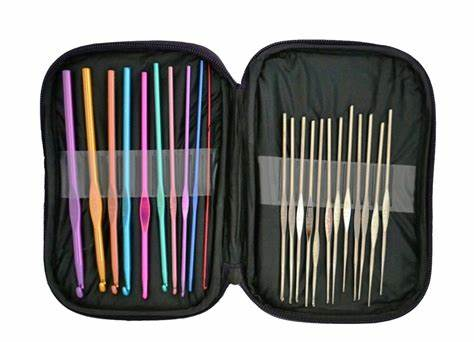

Rozmiar szydełka jest zależny od rozmiaru i typu włóczki, na której masz zamiar pracować. Rozmiar szydełka jest zależny od rozmiaru i typu włóczki, na której masz zamiar pracować.Rozmiar szydełka jest zależny od rozmiaru i typu włóczki, na której masz zamiar pracować.Rozmiar szydełka jest zależny od rozmiaru i typu włóczki, na której masz zamiar pracować.Rozmiar szydełka jest zależny od rozmiaru i typu włóczki, na której masz zamiar pracować.
Rozmiar szydełka jest zależny od rozmiaru i typu włóczki, na której masz zamiar pracować.Rozmiar szydełka jest zależny od rozmiaru i typu włóczki, na której masz zamiar pracować.Rozmiar szydełka jest zależny od rozmiaru i typu włóczki, na której masz zamiar pracować.Rozmiar szydełka jest zależny od rozmiaru i typu włóczki, na której masz zamiar pracować.